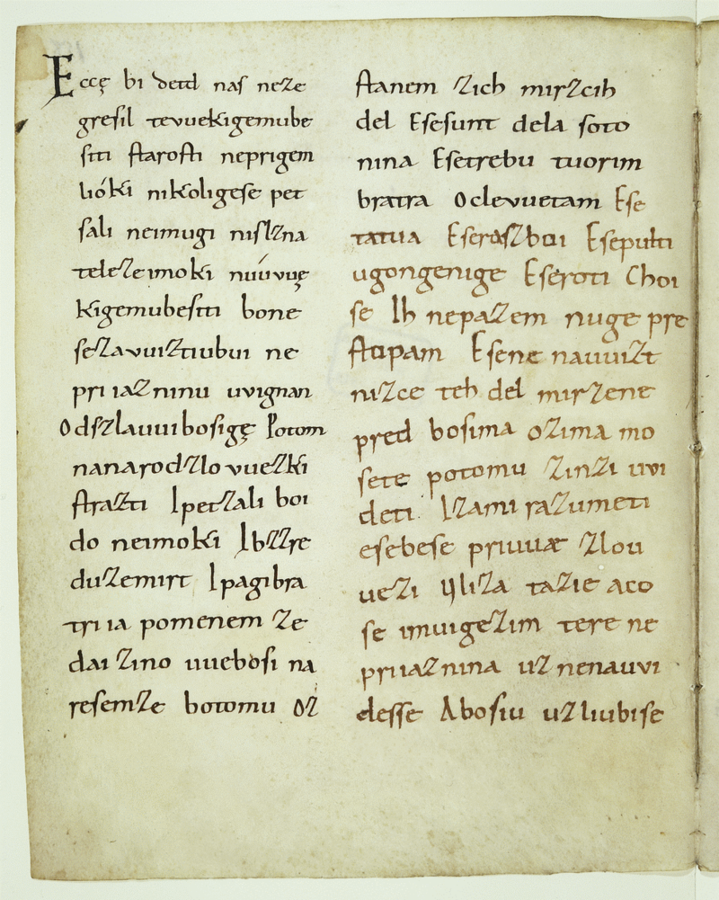
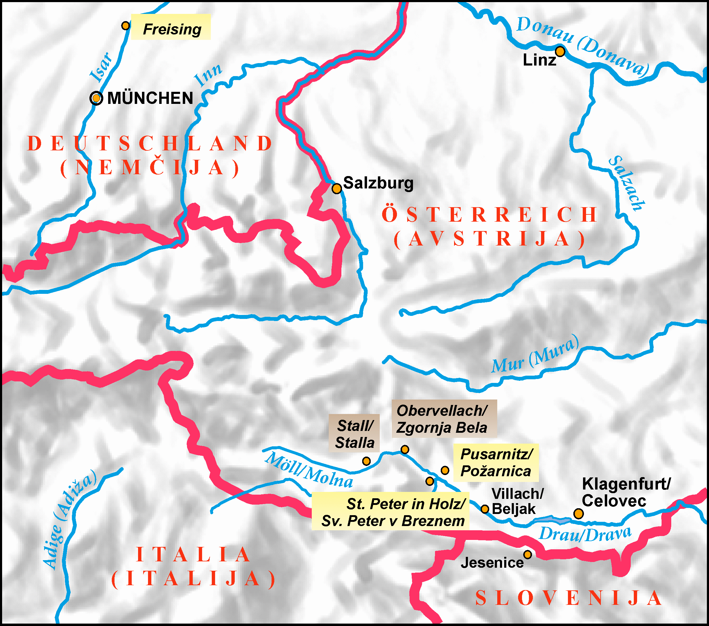
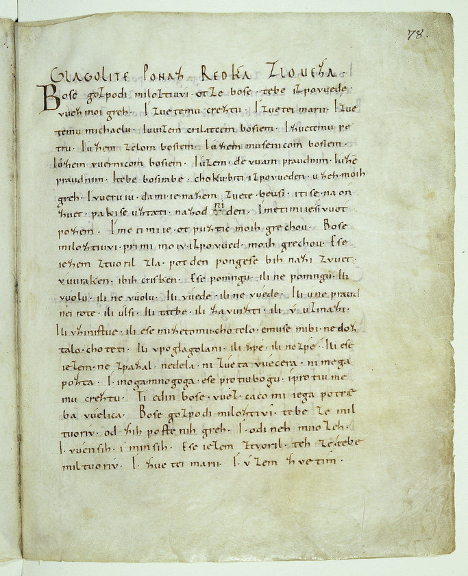

Roman Perevala
vam ga je prinesel Roman Perevala
Brižinski spomeniki so najzgodnejši dokument slovenske kulture. So najstarejši ohranjeni zapisi v slovenščini in hkrati najstarejša slovanska besedila, zapisana v latinici.


Brižinski spomeniki so trije.
Ta rokopisni zbornih ima 6 delov, njegovih 169 listov je popisalo nič manj kot 26 različnih rok. Posamezni teksti so po obsegu zelo različni eni krajši drugi daljši.
Jezik vseh treh spomenikov je nedvomno čista zgodnja slovenščina, brez izposojenk iz tujih jezikov (razen za nekaj krščanskih pojmov), tudi brez sledov kakršnegakoli vpliva.
Jezik v brižinskih spomenikih kaže v vseh svojih značilnostih izrazite začetne slovenske poteze, s katerimi se je slovenščina pričela pretvarjati v samostojno slovansko jezikovno obliko. […] Kakih izrazitih dialektičnih potez v jeziku brižinskih spomenikov še ni najti.
| Imenovalnik (1 skl.) | Zvalnik (7 skl.) |
|---|---|
| Bog | Bože |
| Gospod | Gospodi |
| otec | oče (otze) |
| sin | sinu |
V sodobni slovenščini so ostali določeni ostanki zvalnika. Na primer ime Jure je morda zvalniška oblika od Juri(j).
